Financial fraud & scam networks
A documented Hidden Files investigation describes a fraudster accessing a victim’s WhatsApp and stealing money.
Resilience focusDetect impersonation early and interrupt the path to payment.
Demonstrating how Amit Dubey’s veteran cyber advisory, national security expertise, and partnership power next-generation defense for UK law enforcement, banks, and enterprise systems.
A glance at the cyber defense impact Amit Dubey brings as a strategic partner and advisor.
Translating cross-border cyber expertise to solve key vulnerabilities in the UK digital economy.
With fraud now accounting for over 40% of all crime in England and Wales, the UK is battling a sophisticated scam epidemic. Amit Dubey’s architectural blueprint for Mobi Armour (India’s first anti-fraud app with over 700K downloads globally) provides a proven playbook for real-time mobile scam detection.
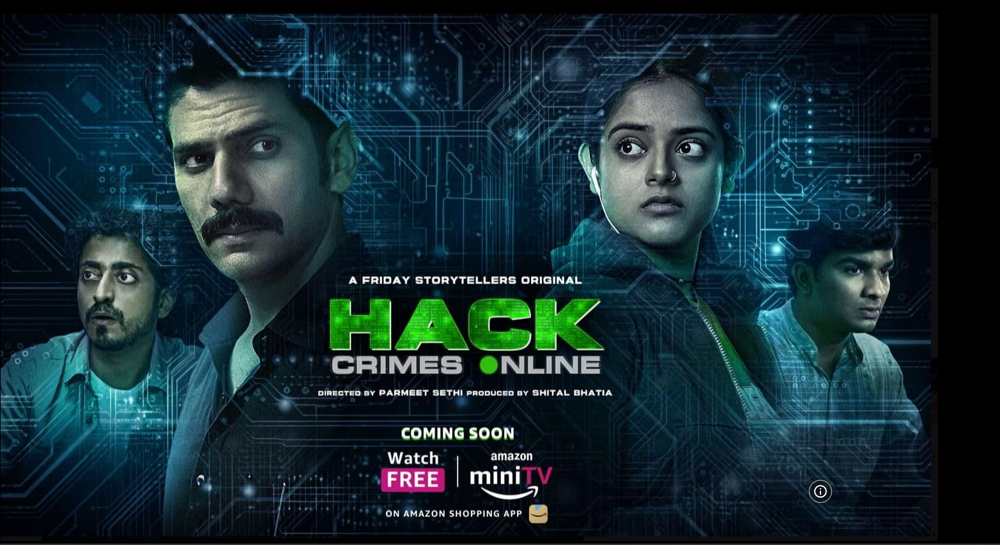
Having personally trained over 900,000 government officers (including police investigators, intelligence agents, and judicial officials across Asia and beyond), Amit brings battle-tested cyber forensics curricula to the UK.
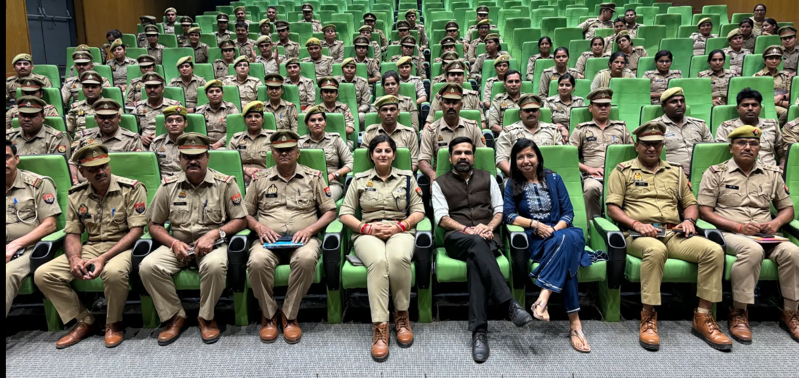
As a Commonwealth UK Chevening Cyber Security Fellow and recipient of an Honorary Doctorate conferred at the House of Lords, London, Amit acts as a trusted bridge between the UK and India's tech corridor.
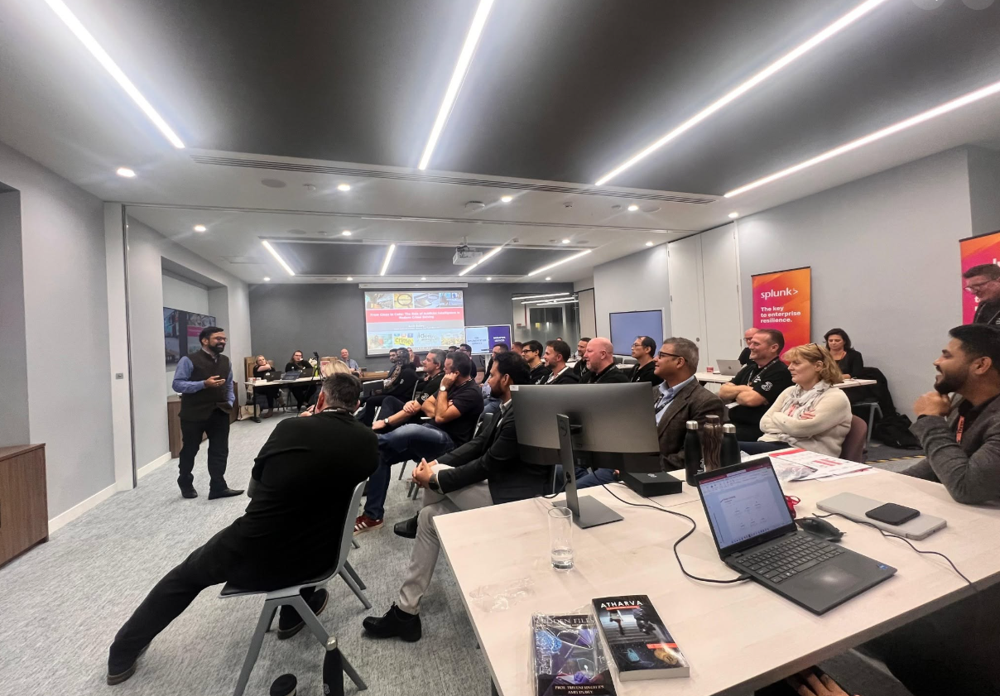
Technological defenses fail if the human element remains vulnerable. As the creator and host of RedFM’s "Hidden Files" (reaching 20 Million weekly listeners), Amit has pioneered the art of teaching security through storytelling.
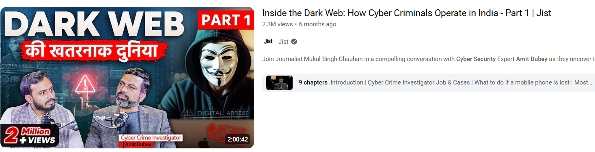
More than 1,100 cybercrime investigations across fraud, identity theft, espionage, extortion and terrorism-linked cases—translated into practical resilience for organisations.
In 2020, Amit Dubey offered to assess the security of India’s national COVID-19 contact-tracing application. The work identified authentication and session-handling weaknesses and informed remediation and backend-security decisions as the platform rapidly scaled.
A documented Hidden Files investigation describes a fraudster accessing a victim’s WhatsApp and stealing money.
A documented loan-app fraud episode shows how casually shared identity proofs can be exploited.
A documented episode examines a fake software update that led to sensitive company information being leaked.
A documented Hidden Files episode follows a business targeted by ransomware and the response that followed.
Work alongside investigation agencies and intelligence bodies on cases requiring a high-integrity forensic approach.
Case details are intentionally anonymised to protect investigations, victims and partner agencies. Themes and outcomes are drawn from the supplied Amit Dubey Global Platform Prototype.
A historical view of Amit Dubey's key international achievements and national roles.
Awarded an Honorary Doctorate at the House of Lords in London in recognition of his global cybersecurity achievements, case solutions, and advisory work.
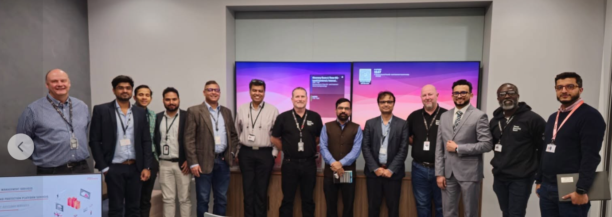
Selected for the prestigious Commonwealth UK Chevening Cyber Security Fellowship, strengthening cybersecurity ties and cooperative intelligence frameworks between India and the UK.
Appointed to the R&D Working Group of MEITY, Government of India, advising parliamentary committees and helping draft the national cyber policy frameworks.
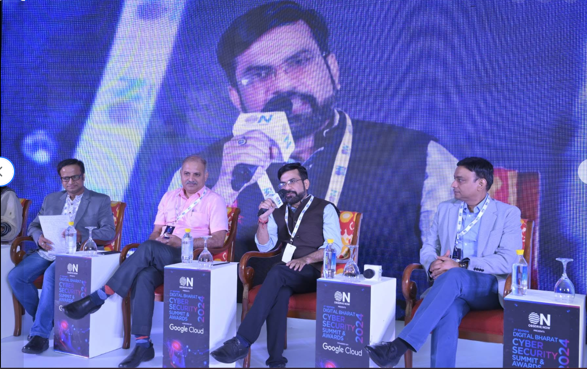
Designed and built Mobi Armour, a national-level anti-fraud security software suite that detected spoofing, fraudulent portals, and data leaks. It gained 700K+ downloads globally.
Led comprehensive forensic and crime investigation training modules for senior IPS officers, state police branches (Delhi, Noida, West Bengal), and judges at Saket Court.
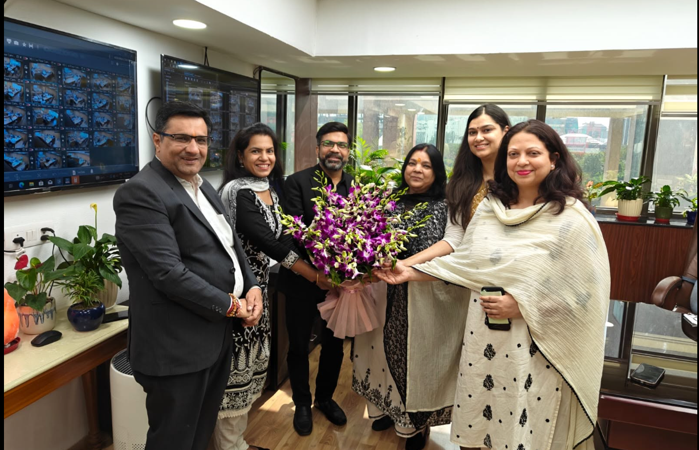
A visual record of Amit Dubey delivering cybersecurity leadership and forensic training worldwide.
Reading, United Kingdom
Saket Court, Delhi
Tokyo, Japan
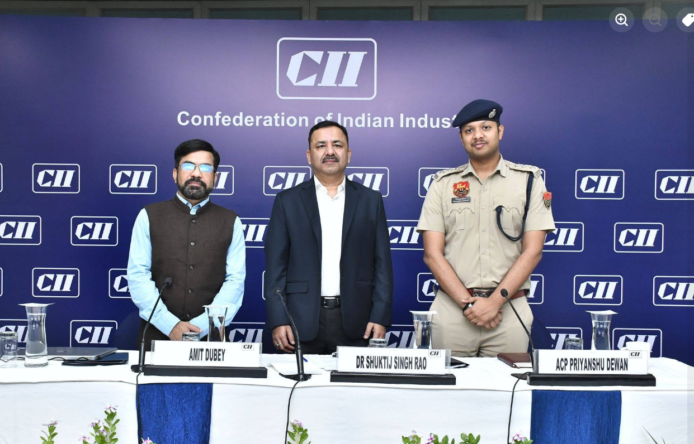
Cyber Security Initiative
National Summit, India
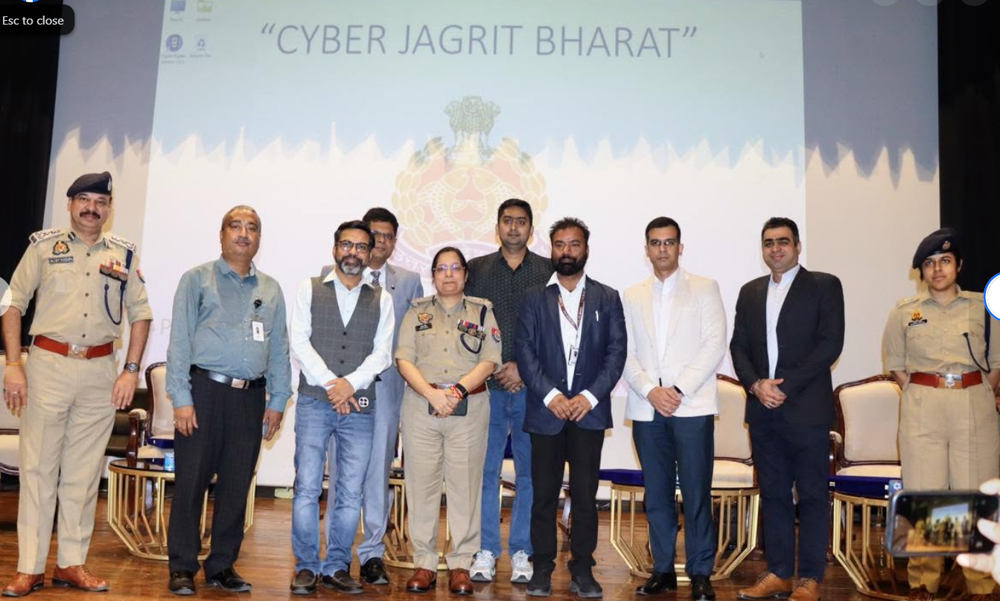
Noida, India
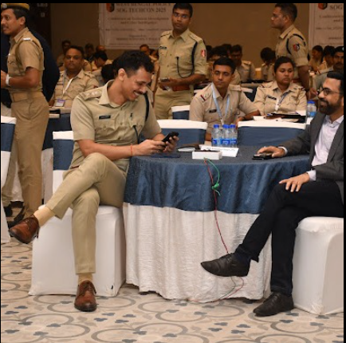
Shanti Niketan, Birbhoomi
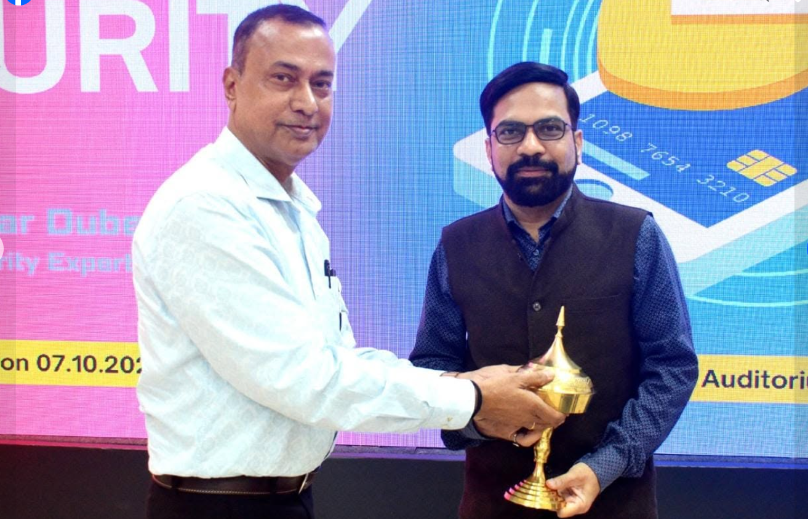
Duliajan, Assam
Authored works and top-ranking podcasts illustrating real cybercrime cases and defensive strategies.
Through radio and streaming platforms, Amit Dubey has hosted multiple hit seasons educating the public on cyber safety, garnering over 100M+ views on YouTube.
Identify critical threat exposures in your organization and receive tactical mitigation recommendations aligned with Amit Dubey’s investigative framework.